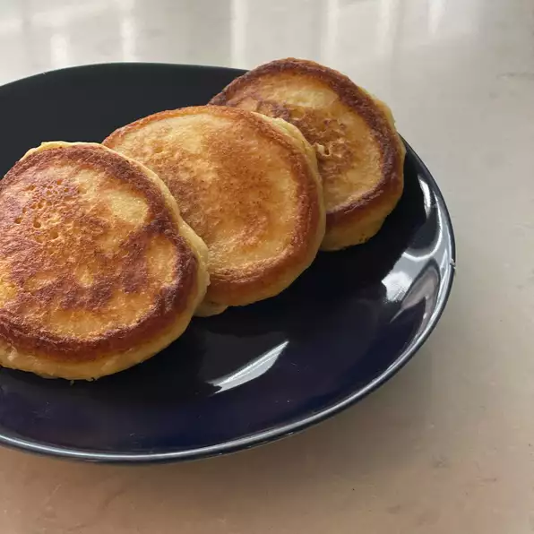

Lemon-Ricotta Pancakes

Description
Easy and light pancakes (2 large or 4 small
servingswith a pinch of lemon zest and
a drizzle of maple syrup
Ingredients
- 3/4 cups of cold milk
- 1/2 teaspoon of baking soda
- 1/2 cup of ricotta cheese
- 1 tablespoon of grated lemon zest
- 1 tablespoon of vegetable oil
- 1 tablespoon of white sugar
- 1 large egg
- 1/8 teaspoon of vanilla extract
- 2 tablespoons of melted butter
- 1 tablespoon of lemon juice
- 1 cup off self-rising flour
- 2 tablespoons of self-rising flour
Steps
- Whisk water and baking soda together in a mixing bowl
- Add ricotta cheese, lemon zest, vegetables oil, sugar, egg, and vanilla
- Whisk until smooth, breaking up lumps of cheese as you mix
- Add melted butter, lemon juice, and 1 cup plus 2 tablespoons self-rising flour
- Whisk together, stirring until most of flour disappears into the batter
- Let batter sit at room temperature about 15 minutes
- Heat lightly greased cast iron skillet or griddle over medium-high heat
- Portion out 1/4 cup scoops of batter onto skillet (cook in batches)
- After 2 to 3 minutes, flip and cook other side until cooked through (same time as the other side)